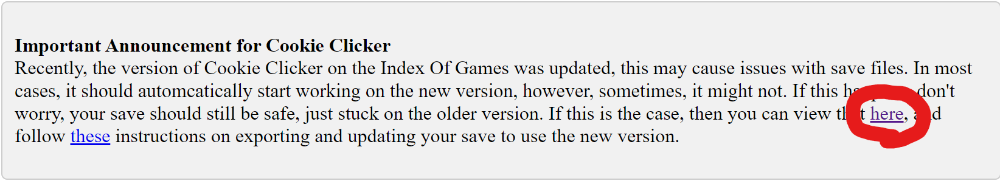
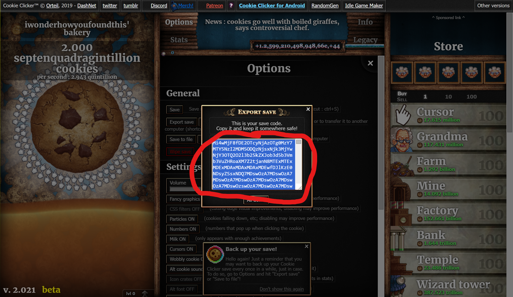
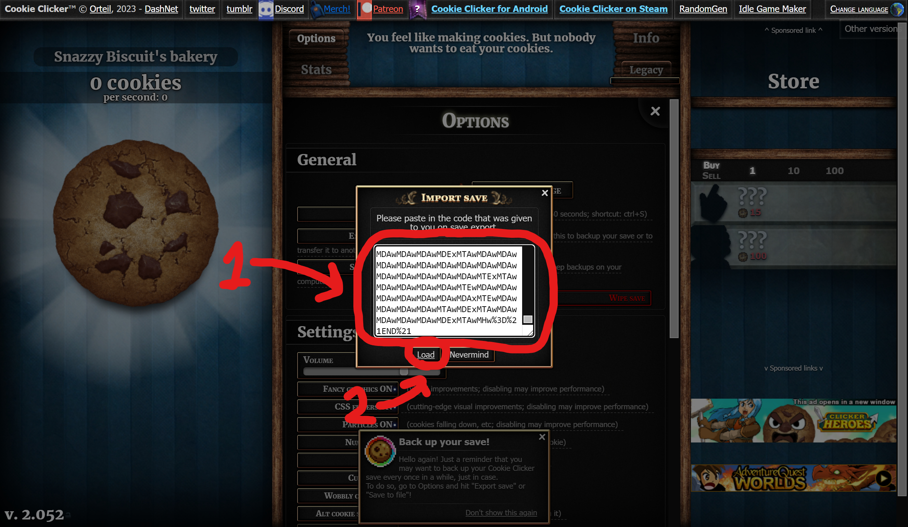

Recently, the version of the Cookie Clicker on the Index of Games was updated, however, this has been bringing some issues with saves, so this is how to upgrade your save to the new version.
First, you need to load the old version of Cookie Clicker containing your save. Simply click the blue hyperlinked "here" text in the announcement that brought you here.
To get the save code once you are in the old version, click "Options" at the top of the page, then click on "Export Save".

In the menu that appears, simply copy the code it shows you, this is going to be what you need, so don't lose it.
Now, open the new version through the main page of the Index Of Games, then, simply click "Options" at the top of the page, then "Import Save".

Once you have the Import Save window open, simply paste in the Save Code you got earlier, then click Load. It will then automatically import all progress from that save (Note, it will replace existing progress, and import the save, it does not add it to current progress). Once it does an autosave, you will be good, and your save has been moved over!
